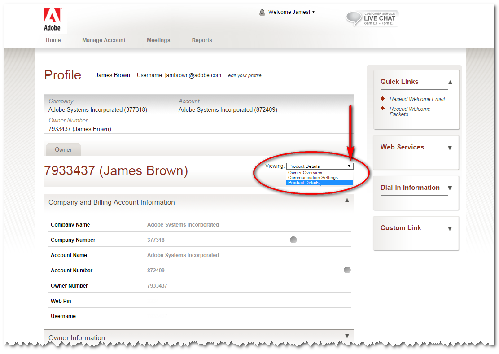

Geek Tools
Things that make your life easier
James Brown | Sr. Research Scientist
Agenda
- Reveal.js - html presentations made easy
- Intercall options - change your defaults
- CrashPlan - free backup tool for home
- Follow Up Then - free and easy reminders via email
- Using git branches for demos / presentations
- GitHub gists to share code samples and scripts
- SQLite - free SQL database with no setup
- Gnuplot - generate graphs from the command line
Reveal.js
HTML Presentations Made Easy
Available on github.com/hakimel/reveal.js
Reveal.JS Features
- Speaker notes (requires a webserver)
- Slide overview
- Vertical / nested slides
- Link between slides internally or externally
- Mobile browser friendly
- Pause mode ('b' or '.')
- Embeded media (video / audio) with optional autoplay
- Export to PDF (chrome only)
- Multiplexing - audience can follow along
Try it now: jbrown123.github.io/geektools
Transition Styles
You can select from different transitions, like:
Cube -
Page -
Concave -
Zoom -
Linear -
Fade -
None -
Default
Themes
Reveal.js comes with a few themes built in:
Default -
Sky -
Beige -
Simple -
Serif -
Night
Moon -
Solarized
Global State
Set data-state="something" on a slide and "something"
will be added as a class to the document element when the slide is open. This lets you
apply broader style changes, like switching the background.
Custom Events
Additionally custom events can be triggered on a per slide basis by binding to the data-state name.
Reveal.addEventListener( 'customevent', function() {
console.log( '"customevent" has fired' );
} );
Clever Quotes
These guys come in two forms, inline:
“The nice thing about standards is that there are so many to choose from”
and block:
“For years there has been a theory that millions of monkeys typing at random on millions of typewriters would reproduce the entire works of Shakespeare. The Internet has proven this theory to be untrue.”
Pretty Code
function linkify( selector ) {
if( supports3DTransforms ) {
var nodes = document.querySelectorAll( selector );
for( var i = 0, len = nodes.length; i < len; i++ ) {
var node = nodes[i];
if( !node.className ) {
node.className += ' roll';
}
}
}
}
Courtesy of highlight.js.
Fragmented Views
Hit the next arrow...
... to step through ...
- grow
- shrink
- roll-in
- fade-out
- highlight-red
Reveal.js
HTML Presentations Made Easy
Available on github.com/hakimel/reveal.js
Intercall Options
How to set defaults for intercall
Available at www.intercall.com/adobe
Intercall Website
SSO login at www.intercall.com/adobeIntercall Website
SSO login at www.intercall.com/adobeIntercall Website
SSO login at www.intercall.com/adobe Intercall Website
SSO login at www.intercall.com/adobeIntercall Website
SSO login at www.intercall.com/adobeIntercall Cheat Sheet
Muting Commands
*5 --- Mute all lines except leader
#5 --- Unmutes all lines
*6 --- Mute an individual line
#6 --- Unmute an individual line
Announcement Commands
*3 --- Change entry/exit announcement (name, tone, silence)
Other Commands
** --- List available keypad commands
*# --- Participant count
*2 --- Begin/End recording of conference
*4 --- Private roll call
*0 --- Operator assistance -- conference
00 --- Operator assistance -- individual
*1 --- Dial-out to a participant
*7 | #7 --- Lock | Unlock conference (incl. organizer)
*8 --- Allow | Disallow conference continuation
CrashPlan
FREE backup software for home
Available at www.code42.com/crashplan
CrashPlan free version
- Clients for Linux, Windows, Mac
- Backup to external hard drive or other computers
- Once daily incremental or differential backups
- Select specific files / folders for backup
- Encrypted backup and encrypted transmission
- Automatic status emails (not backed up, etc.)
- Restore individual files
- Self-healing archives
- Keep deleted files forever* *(not available for IRS employees)
Follow Up then
Free and easy reminders via email
Available at www.followupthen.com or fut.io
Follow Up ThenWebsite
Available at www.followupthen.com or fut.ioGit Branches
The easy way to present code in demos and presentations
Basic Git Branching Commands
$ git checkout -b demo1
create branch demo1 and switch to that branch
$ git add democode.js
$ git commit -m "whats in this version"
add file(s) and commit as normal
$ git checkout -b demo2
create a new branch for the next version
$ git checkout demo1
switch between branches
DEMO!
GitHub Gists
Easily share snippets and pastes with others
Available at gist.github.com
Internally at git.corp.adobe.com/gist
Gist Basics
- Public (searchable) or secret* gists
- Every gist is a full git repository (clone, fork, etc.)
- Gists can be embedded in articles, blogs, etc.
- Gists have a filename and language (linked to file extension)
Gist help
Available at help.github.com/articles/about-gistsSQLite
Serverless, public domain SQL database engine
Available at www.sqlite.org
SQLite Features
- Self-contained, serverless, zero configuration, ACID transactional database
- Implements most of SQL92
- Most widly depoloyed SQL database engine in the world*
- Public domain source code / use for any purpose
- Used by many embedded systems including smart phones
- Embedded in many apps including Firefox and Chrome
- Database in a single cross-platform file
- Less than 500KB of ANSI-C code (less w/o optional features)
- Bindings for dozens of languages
- No external dependencies
- Cross platform: Unix, Linux, OS-X, Android, IOS, Windows
- Stand alone CLI client
DEMO!
GNUPlot
Cross platform CLI graphing utility
Available at www.gnuplot.info
GnuPlot Features
- Cross platform
- Output to console or file (pdf, png, gif, jpg, etc.)
- Mousable web display output (HTML5, svg)
- 2D, 3D, and 4D plots (3D heat maps)
- Mix and match chart types on the same plot
- Real-time plotting
- Single or multiple graphs
- Scripted or interactive interface
GNUPlot Examples


GNUPlot Examples


GNUPlot Examples


GNUPlot Gas Prices Example
gasprices.gp
set terminal windows
set datafile separator ","
set xtic rotate
set xtics ("Apr 1993" 0, "Jan 2000" 82, "Jan 2006" 154, \
"Jul 2008" 184, "Dec 2008" 189, "Jul 2014" 256)
plot 'GasPricesMonthly.csv' using 0:2 with lines title "Gas Prices", \
'GasStationIncome.csv' using 0:2 with lines axes x1y2 title "Station Income"
pause -1 "Press any key to exit"
GNUPlot Gas Prices Example
gasprices.gp
QUESTIONS
James Brown | Sr. Research Scientist
- Reveal.js - html presentations made easy
- Intercall options - change your defaults
- CrashPlan - free backup tool for home
- Follow Up Then - free and easy reminders via email
- Using git branches for demos / presentations
- GitHub gists to share code samples and scripts
- SQLite - free SQL database with no setup
- Gnuplot - generate graphs from the command line